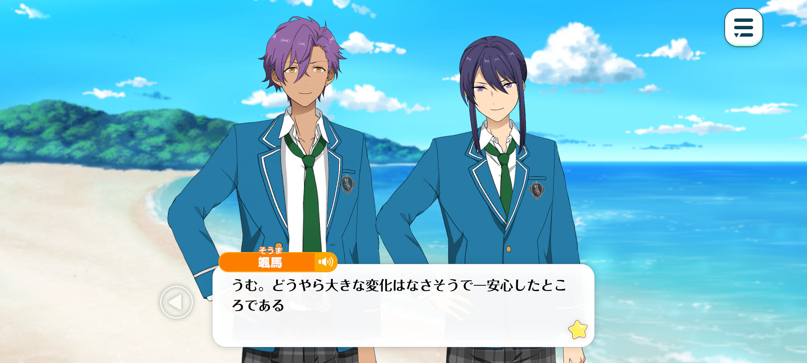
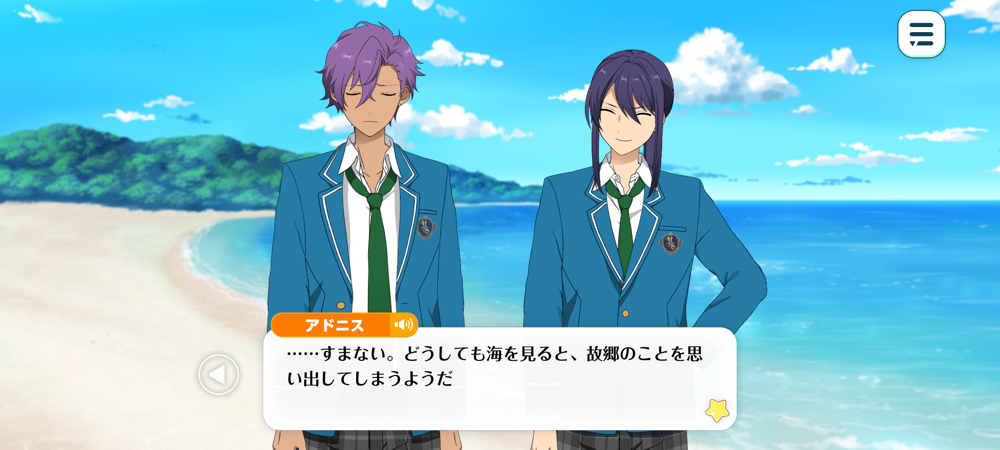

May My Voice Reach You | Chapter 2
Idol Story (FS2)



Adonis: Oh, Anzu. You are here. I have only just arrived myself. It seems Kanzaki came a little early to enjoy the scenery.
Souma: Umu! Everything appears to be in order. That is a relief.
Now then. Shinkai-dono will surely be pleased to see the beach in its present state. I shall take a photograph with my Smartphone.
I believe I need only press here to take a picture... Hm? Why is my face appearing on the screen? I wish to photograph the sea, not capture a Selfie!
What!? Why has the screen changed?!
Adonis: Calm down, Kanzaki. Let me see your phone.
It seems you selected "Video" instead of "Photo". If you press here...
...Hm? I thought this was the right button.
Souma: Adonis-dono? The screen appears to have changed from before. Am I able to take a photograph now?
Adonis: Just a moment. I am not particularly familiar with smartphones either, so I am a little unsure myself
Souma: I see! I sincerely apologise for rushing you!
Oh? Has it been fixed?
Adonis: No, not quite... Look. Anzu is taking photographs of us.
Souma: Truly...? Anzu-dono came here to help decide which photographs would be suitable for your pamphlet. I apologise for causing such a commotion.
It is quite all right? If my presence might help Adonis-dono display a different expression, then I would be more than happy to assist!
Adonis: Right. Kanzaki, you should be able to take photographs now. Give it a try.
Souma: Ah, my thanks!
...Umu. The sea looks beautiful from this angle ♪
Adonis: Come to think of it, Anzu and I have gazed out at the sea together like this before.
Although that was in a foreign country, somewhere quite different, with an entirely different atmosphere... Even so, the ocean is just as beautiful here.
Souma: Indeed! The skies are clear today, allowing the sunlight to reflect off the waves and make them sparkle.
The appearance of the ocean changes with the weather and the currents. That, too, is part of its charm.
Especially during winter, when the early morning sky begins to brighten, the sight is truly magnificent. If only it were snowing as well... It brings to mind the saying, "In winter, the early morning is most beautiful." [1]
Adonis: I have heard that expression before. Is it a passage from an ancient Japanese text?
Souma: Splendid, Adonis-dono! You have been studying! How admirable ♪
Adonis: No, that is something else I learned from you.
Kanzaki is always teaching me so much about this country's culture, which I still know very little about. Of course, Oogami and Anzu help me as well.
The vastness of the ocean... You all welcomed me with open arms, despite my having come from a distant land. I am fortunate to have so many wonderful friends. That makes me very happy.
...Forgive me. For some reason, looking out at the sea always reminds me of my homeland.

Souma: Do not worry yourself about that. Many who visit this place find themselves lost in thought. Perhaps the sea has a way of helping us clear our minds.
Besides, if being here has helped you gain a clearer idea of what you wish your Feature Live to be, then I would say this trip was well worth it.
Adonis: Thank you. Both you and Anzu... I hope I can make good use of what I have learned here.
(Together with my friends, I continue to pursue my dream of becoming an idol in this foreign country. I have come a long way since I first arrived...)
(Am I any closer to achieving my dream?)
Hm…?
Souma: Is something the matter, Adonis-dono?
Adonis: No, something is moving beneath the sand at my feet...
...! Kanzaki, a tiny creature has emerged from the sand!
Souma: Remain calm... Fumu, it is a hermit crab. How curious to find one in a place such as this.
Adonis: Is it unusual to find hermit crabs at the beach?
Souma: Ah, that is not quite what I meant. Shinkai-dono taught me that, during this time of year, hermit crabs and other crabs are usually found along rocky shores. That is why I find it rather curious to see one here in the sand.
Adonis: Then... could it be dangerous for this little one to stay here?
Souma: I do not believe so. However, it would be better off among the rocks. Umu, that spot over there should do nicely. It will be able to join its companions there.
Adonis-dono, let us carry it over.
Adonis: But... would it really be all right for me to touch it? What if I accidentally hurt it?
Souma: Have no fear. You are a kind and gentle soul, worthy of the utmost respect. I am certain the hermit crab is in good hands. Simply handle it as you always would, and all will be well.
Adonis: Anzu, are you sure you are all right with me doing it, too? ...All right. I shall give it a try.
Oh... It's moving about in the palm of my hand.
Look, Anzu. It is so cute... I feel as though I could watch it forever.
Souma: You picked it up quite skillfully. Now, let’s carry it over there. Is it wriggling?
Adonis: Yes, but do not worry. I will not drop it.
The sea breeze is strong. At this rate, it might get blown away…!?
…The wind has died down. Is the crab all right?
It seems to have retreated safely into its shell… Good. That should protect it. Let’s hurry before the wind picks up again.
I am sorry if I frightened you. You can go back to your family now.
Phew. …Anzu? Did you notice the hermit crab too?
You could tell because the sand was moving strangely?
Thank you, Kanzaki. I might have noticed the crab myself, but I would not have known that it needed to be moved to the rocks.
Souma: I did very little. I simply happened to know that much.
I cannot say for certain how the crab ended up here, but most likely, the waves washed it ashore.
Then it must have struggled to make its way across the sand, searching desperately for a tide pool.
To think that someone would find it on such a vast beach… It did not give up, and that is what brought it to Adonis-dono.
That hermit crab must be grateful.
Adonis: Struggling, and waiting for someone to find it…
Souma: What did you say?
Adonis: No, it is just… I feel that the hermit crab and I have something in common.
I have always sung. Singing is how I express my thoughts and feelings.
This is what it means to be Otogari Adonis of UNDEAD. I hope that my voice can bring someone a moment of peace, even if only for a little while.
I want to keep singing. I want to keep sharing my voice with the world. And I want everyone to know that… I am here, by your side.
I have spent all this time working towards my dream. That is what I want my Feature Live to express.
And I do not want to convey that through singing and dancing alone. There are many ways I can show people who I am, and I want to explore them all. I do not want to give up after coming this far.
That is why I felt that my pamphlet should be more than just that.
I would be happy if more people could get to know me as an idol.
I am sorry if that was hard to understand. I am still not very good at putting my thoughts into words.
So that is how I should approach the pamphlet…? That is how I can make it better… Thank you, Anzu.
Souma: Show the world your voice, hmm… Fufu. That sounds just like you, Adonis-dono. It is a wonderful sentiment. I look forward to seeing how your pamphlet turns out.
Adonis: I see. I will do my very best to live up to the expectations of everyone looking forward to my live.
No matter where in this world I may be, may my song reach you across the waves.
- Souma quotes from “The Pillow Book”, a book written in Heian Japan by a court lady. She remarks that winter is the best, especially when it's snowing and you’re inside, watching as the servants carry charcoal for the fire.